NEET 2026 · figure review
Q3 physics · Self and mutual inductance
Two identical inductors are connected in two different configurations $P$ and $Q$, where a time varying current $I(t)$ is flowing, as shown in the figure. The induced emf between points $a$ and $b$ for configuration $P$ is $E_P$ and that for configuration $Q$ is $E_Q$. The ratio $E_P / E_Q$ is : [Neglect the effect of mutual inductance.]
Original page

Question figure
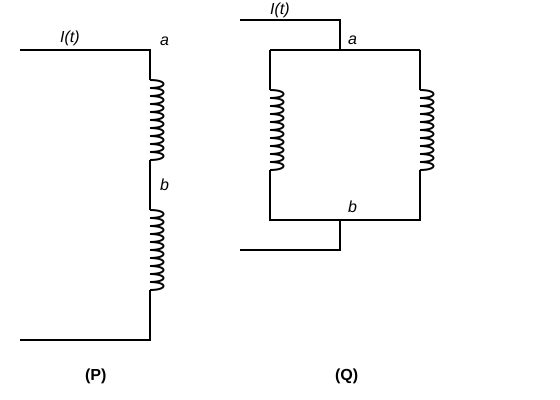
Q8 physics · Photoelectric effect; Hertz and Lenard's observations
A beam of light falls on a metal surface such that photo-electrons are generated. If power of the light source starts to decrease linearly with time $t$, then variation of the photocurrent $I$ and magnitude of the stopping potential $|V|$ with time is best represented by :
Original page
Q9 physics · Energy stored in a capacitor
Three identical capacitors P, Q and S, each of the capacitance C, are connected to a battery of voltage V, as shown in the figure. If the energy stored in the capacitor P and total energy stored in the system are $U_p$ and $U_t$, respectively, then the ratio $U_p / U_t$ is :
Original page

Question figure
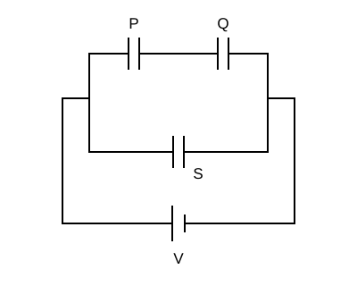
Q10 physics · Bernoulli's principle and its applications
Water flows in a streamline motion through a horizontal pipe of circular cross-section as shown in the figure. The pressure difference of water between $P$ and $Q$ is $15 \text{ Nm}^{-2}$. The area of cross-section at $P$ and $Q$ are $40 \text{ cm}^2$ and $20 \text{ cm}^2$, respectively. The rate of flow of water through the pipe, in $\text{cm}^3\text{s}^{-1}$, is: [Take density of water $= 1000 \text{ kg m}^{-3}$]
Original page
Question figure
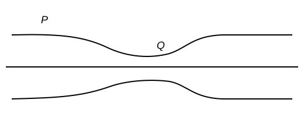
Q11 physics · Biot-Savart law and its application to a circular current loop
A current $I_0$ flows through a metallic circular loop of radius r as shown in the figure. Resistance of the segment ABC is half of ADC. Magnitude of magnetic field at the center O of the loop is:
Original page
Question figure
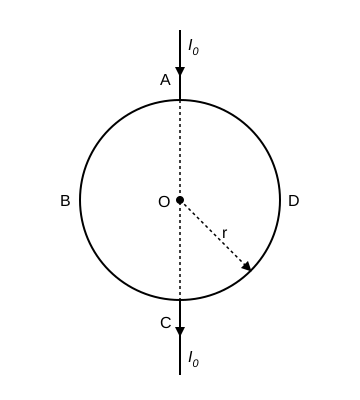
Q12 physics · Viscosity, Stokes' law and terminal velocity
In the measurement of viscosity of liquids using terminal velocity experiment, spherical balls of same radius but having different densities are used. The variation of the terminal velocity ($v$) with the ratio of density of spherical ball ($\sigma$) to density of the liquid ($\rho$), is best represented by:
Original page
Q16 physics · Zener diode and Zener diode as a voltage regulator
An ideal Zener diode with breakdown voltage of -3 V is reverse biased with a negative input voltage $V_i$ = -5 V. The magnitude of voltage difference between points B and A is :
Original page

Question figure
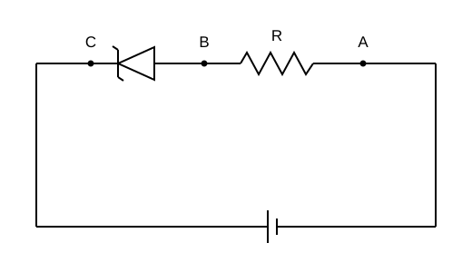
Q21 physics · Electric potential due to a point charge, a dipole and a system of charges
A unit positive point charge is taken slowly through an infinitesimally thin tube that is inside a charged dielectric sphere of radius $R$, having uniform positive charge density $\rho$, as shown in the figure. The initial and final positions of the charge are marked by $A$ and $B$ at distances $2R$ and $3R$ respectively, from the centre of the sphere. In this process, the magnitude of the total work done on the point charge is $\frac{\rho R^2}{n\epsilon_0}$. The value of $n$ is : ($\epsilon_0$ is the permittivity of vacuum)
Original page
Question figure
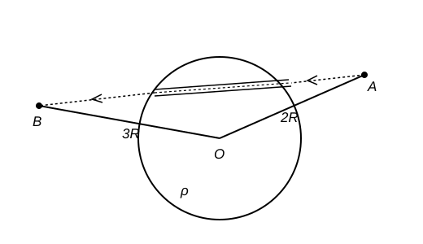
Q22 physics · Refraction at plane and spherical surfaces
Consider three media $P$, $Q$ and $R$ with refractive indices 1, 1.25, and 1.5, respectively. The medium $Q$ having a thickness of 5 cm is placed between extended media $P$ and $R$ as shown in the figure. An object $O$ is placed at the center of medium $Q$. If viewed from medium $P$ near the normal direction, the apparent depth of $O$ is $h_1$. For similar observation from medium $R$, the apparent depth is $h_2$. The value of $|h_1 - h_2|$, in cm, is:
Original page

Question figure
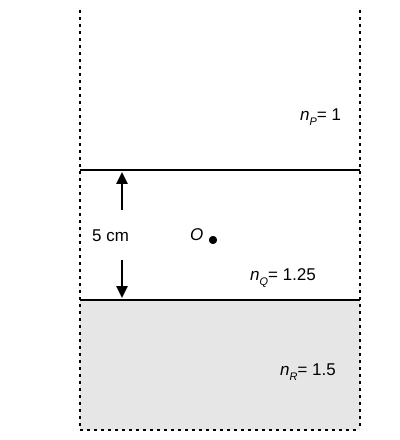
Q23 physics · Momentum, Newton's second law and impulse
A frictionless circular wire of unit radius is fixed on the horizontal plane. Two point particles of unit mass start moving simultaneously from point $A\left(\theta = \frac{\pi}{2}\right)$ with identical uniform angular speeds in opposite directions, and meet again at point $B\left(\theta = \frac{-\pi}{2}\right)$. During this time, which of the following figures schematically represent the magnitude of the total linear momentum $P$ of the system, as a function of $\theta$?
Original page
Question figure
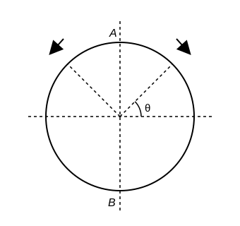
Option figures
Q27 physics · Parallel and perpendicular axes theorems and their applications
A solid sphere A of radius R and mass M is attached at a point to a smaller solid sphere B of radius $r < R$ and mass $m < M$. Assume that the line joining their centres lies along the horizontal. The moment of inertia of the system calculated about a vertical axis passing through the centre of A is $I_A$ and that calculated about a vertical axis passing through the centre of B is $I_B$. The difference $I_A - I_B$ is:
Original page

Question figure
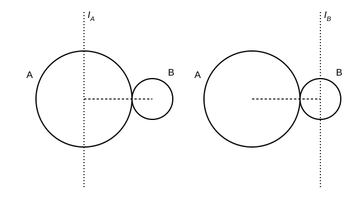
Q29 physics · Combination of thin lenses in contact
The lens combination as shown in the figure, consists of two lenses, $L_1$ and $L_2$, of the focal lengths $+10$ cm and $-10$ cm, respectively. The position of the image formed is :
Original page
Question figure
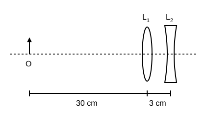
Q31 physics · Angular momentum, its conservation and applications
A thin horizontal disc is rotating about a vertical axis passing through its fixed centre $O$. Its angular momentum is $L_A$ and $L_B$ computed about points $A$ and $B$, respectively, with $OB = 2\times OA$. The value of $\frac{L_A}{L_B}$ is :
Original page
Question figure
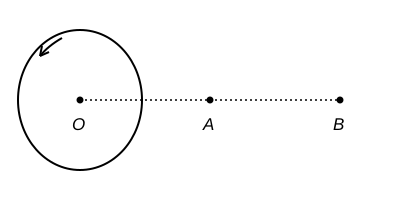
Q32 physics · Faraday's law of electromagnetic induction
A conducting loop of finite resistance lies on the x - y plane. There is a constant magnetic field in the z direction. The area of the loop varies with time t, as $A = A_0(1+\sin t)$ in appropriate units. The figure that correctly indicates the qualitative behaviour of the power P dissipated in the loop as a function of time is :
Original page
Q33 physics · Conductors and insulators
A point charge Q is placed inside a cavity within a solid isolated conducting sphere. Consider points A, B and C as shown in the figure, where the magnitudes of the electric fields are $E_A$, $E_B$ and $E_C$, respectively. The points B and C are at the same distance from the center of the solid sphere. The correct option is:
Original page

Question figure
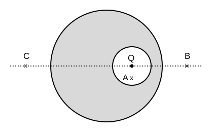
Q35 physics · Alpha-particle scattering experiment
In Geiger-Marsden experiment, the number of scattered $\alpha$-particles $N(\theta)$ is plotted as a function of scattering angle $\theta$. Which of the following options represents the correct plot?
Original page
Q36 physics · Temperature dependence of resistance
Consider two circuits, (A) and (B), each having two resistors. One of them has a positive temperature coefficient of resistance, $+\alpha$, while the other one has a negative temperature of coefficient, $-\alpha$, as shown in the figure. The current through these circuits are denoted by $I_A$ and $I_B$. At initial temperature, the resistance of the two resistors is $R_0$. As the temperature is increased, the correct option that describes the variation of current in these circuits is :
Original page
Question figure
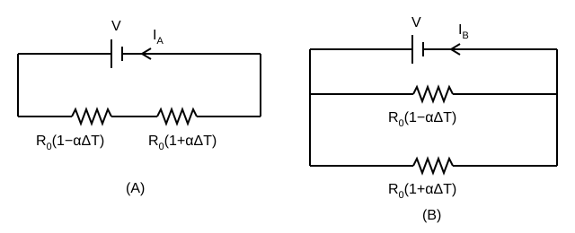
Q39 physics · First law of thermodynamics
One mole of an ideal monatomic gas undergoes a cyclic process as shown in the figure. The total heat supplied to the gas is :
Original page

Question figure
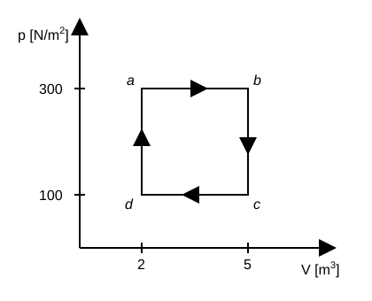
Q42 physics · Semiconductor diode: I-V characteristics in forward and reverse bias
Three identical p-n junction diodes $D_1, D_2$ and $D_3$ are connected across a battery as shown in the figure. If the width of the depletion regions of $D_1, D_2$ and $D_3$ are $W_1, W_2$ and $W_3$, respectively, then the correct option is:
Original page
Question figure
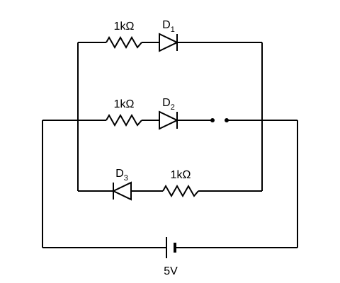
Q44 physics · Elastic and inelastic collisions in one and two dimensions
Bob B of mass $m$ at rest is hanging vertically from the ceiling via a massless string of length 10 m, as shown in the figure. Point mass A of mass $m$ travelling horizontally with speed $10\ ms^{-1}$ hits bob B elastically. The bob B rises $h$ meter after the collision. Taking the acceleration due to gravity $g = 10\ ms^{-2}$ and neglecting the size of the bob, the value of $h$ is :
Original page
Question figure
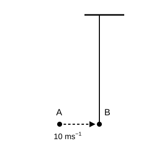
Q46 chemistry · Aldol condensation, Cannizzaro reaction and haloform reaction
For the following reaction sequence, choose the correct option.
Original page

Question figure
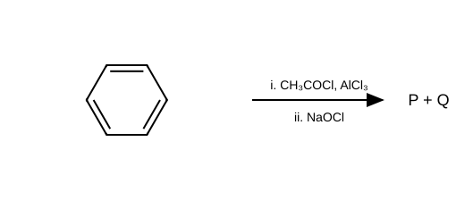
Q48 chemistry · Inductive effect, electromeric effect, resonance and hyperconjugation
The following carbocation is stabilized by the interaction of the empty $p$ orbital with
Original page
Question figure
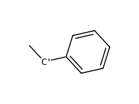
Q52 chemistry · Solubility and solubility product
The correct order of solubility of the given salts in water at 298 K is
Original page
Question figure
| Salt | $K_{sp}$ at 298 K |
|---|
| $AgBr$ | $5.0\times10^{-13}$ |
| $Zn(OH)_2$ | $1.0\times10^{-15}$ |
| $Hg_2Cl_2$ | $1.3\times10^{-18}$ |
Q64 chemistry · Effect of temperature; Arrhenius theory
For an elementary chemical reaction, the Arrhenius plot is given below. If the energy of activation is 6.64 kJ $mol^{-1}$ and R = 8.3 J $K^{-1}$ $mol^{-1}$, the temperature at which the rate constant becomes $e^2$ $min^{-1}$, is:
Original page

Question figure
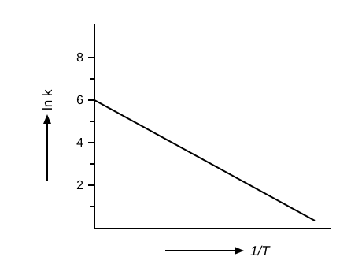
Q69 chemistry · First law: work, heat, internal energy and enthalpy
Consider the reversible processes for 1.0 mol of an ideal gas as shown in the figure. $w_1$, $w_2$, $w_3$ and $w_4$ represent work done (in calories) in the processes 1, 2, 3 and 4, respectively; $\Delta U_2$ and $\Delta U_4$ are changes in the internal energy for the processes 2 and 4, respectively. [use $R = 2\ cal\ K^{-1}\ mol^{-1}$] The correct option is
Original page

Question figure
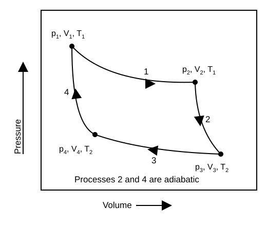
Q72 chemistry · General methods of preparation, properties and reactions
One of the products formed in the following reaction is
Original page
Question figure
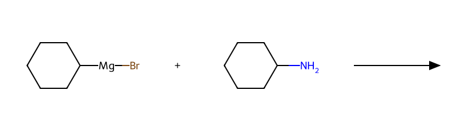
Option figures
Q76 chemistry · Mechanism of electrophilic addition: hydrogen, halogens, water and hydrogen halides
Given below are two statements: In the light of the above statements, choose the most appropriate answer from the options given below.
Original page

Question figure
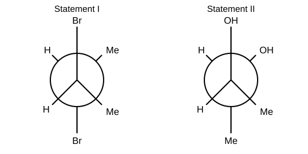
Q77 chemistry · Alkenes: geometrical isomerism
Consider the following reaction sequences and choose the correct option.
Original page
Question figure
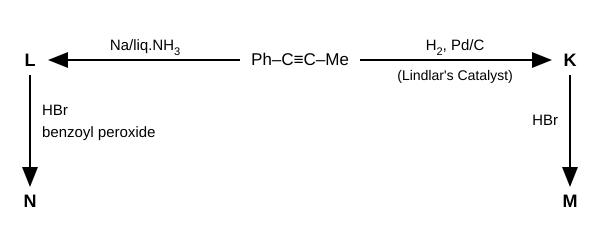
Q79 chemistry · General methods of preparation, properties, reactions and uses
Identify the reactions which give aniline as the major product. Choose the correct answer from the options given below.
Original page
Question figure
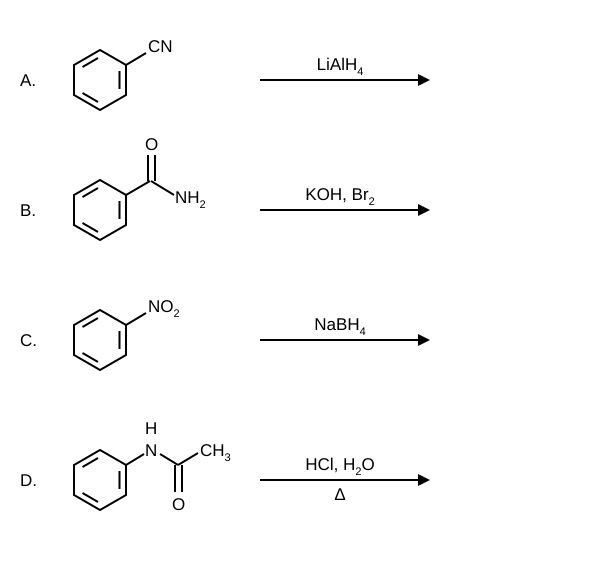
Q82 chemistry · Aldol condensation, Cannizzaro reaction and haloform reaction
The compound that CANNOT be obtained from the aldol condensation reaction shown below, is
Original page

Question figure
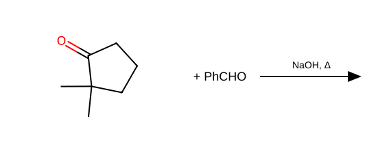
Option figures
(2)
(3)
(4)
Q86 chemistry · Oxidation and reduction: Wolff-Kishner and Clemmensen
Consider the following reaction, and choose the correct option.
Original page
Question figure
Q88 chemistry · Variation of psi and psi-squared with r for 1s and 2s orbitals
Consider the following schematic plots of orbital wavefunction ($\Psi_r$) against distance (r) from the nucleus. The figure representing two radial nodes in the orbital is
Original page
Question figure